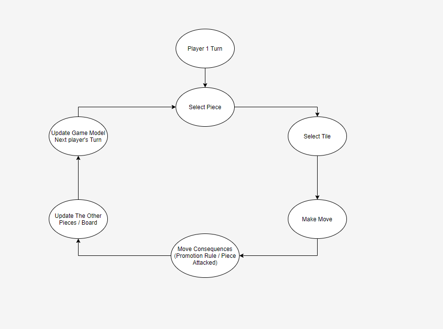
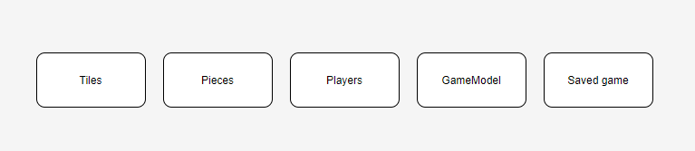
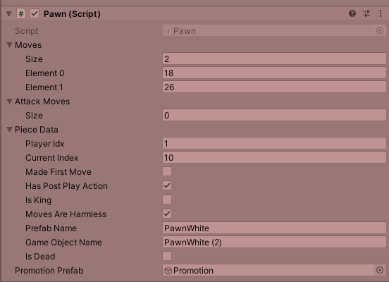
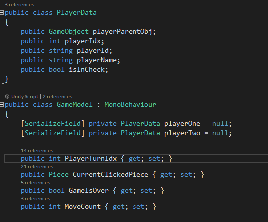

Chess
Intro
Chess is a popular board game. Implementing it in Unity is a great way to continue improving as a game developer. In this article I'll focus on the unique topics related to making a board game, specifically Chess.
structure
Game loop
Board games consist of several players playing together. Each player makes their move when it's their turn. The game ends when a move is made that determines the player the winner. The BoardController is in charge of managing the flow of the game.
In more complicated board games, the game is subtracted from different states in a state machine and the controller handles the interactions between the states.
Here I had no need for this encapsulation and the The BoardController controls the game flow with the help of the GameModel.

Game Management
The game consists of many resources and data that need to be managed and interact with each other.
  
2. Pieces:
All pieces inherit from an abstract Piece class.
The main difference between the pieces in chess is their possible moves, so each sub-class must implement its own SetMoves().
There are 3 main ways of connecting the piece to the tile it's on:
a. The tile has a pointer to the piece that's on it / The piece has a pointer to the tile it's on.
b. We store the tiles in an array in a way that we hold a mapping from a piece's position on the board to the tile it's on.
c. Every piece saves the index of the tile it's on.
I went for the third option since I didn't want to expose pointers between a piece and a tile.
The second option was more complicated than the third option, and I prefer holding up-to-date data than re-calculating it here.
Every tile didn't need to know the piece on it, only if a piece was on it and the player on it.
Clickability of a piece could have been handled by every piece with OnMouseDown(), and then it could've updated the BoardController with the currently selected piece.
I preferred moving all the input handling to the BoardController, but it could've been in an InputHandler class but in this case it was overkill.
Every piece has a box collider and all the pieces are in the same layer so the BoardController can ray cast for this layer only on every mouse click.
4. GameModel:
In order for the BoardController to control the flow of the game, we need to hold up-to-play data of the game:
a. Whose turn it is.
b. Is the game over.
c. Is a move in progress.
d. Is a player in check / checkmate.
e. The currently selected piece.
The GameModel Handles all this Game data and creates and contains the players' data.
5.1 Saving:
We can save all this data to a server or to a local file.
I chose to a local file since it's simpler. The better solution would be to a server so that when moving between devices you don't lose your saved game. It's also more secure.
I only supported saving the last saved game but in the same way we can save many games.
5.1 Loading:
We can only load a saved game from in-game. Since we only saved the pieces data and not the actual pieces, we need to update the data of the current pieces.
If a piece was saved but doesn't exist in the current game then we need to create it (from the Promotion Rule).
Simulations
Problem: In Chess we need to simulate if a move will put my king in check or if my move can save the king from a current state of check.
Solution 1: Before we make any moves, simulate my moves and validate them for my king's check status.
Solution 2: Hold extra data on every piece. If it's potentially threatening to the opposing player's king, then manage all potential and actual threats and validate your moves vs them.
Main con for solution 1 is that you need to have the moves of all your players updated on every simulation and every piece needs to be simulated before it moves. This is CPU expensive.
Solution 2 is an attempt to reduce the calculations by validating against the threatening pieces of the opponent and not all his pieces. I've not attempted solution 2 since we only have max 16 pieces that can threaten, and each with a limited amount of moves.
References